# Creating tuples
point = (3, 4)
person = ("Alice", 25, "Engineer")
singleton = (42,) # Note the comma!
empty = ()
# Accessing elements (same as lists)
x = point[0] # 3
name = person[0] # "Alice"By the end of this session, you’ll be able to:
Identify differences between tuples and other sequence types
Create and return tuples from functions
Identify differences between sets and other sequence types
Use set operations to build and manipulate sets
Use lists as stacks and queues
Write list comprehensions to synthesize data
Create dictionaries for counting and indexing
Identify valid dictionary keys and values
Understand how hash maps work internally
Each data structure has strengths and trade-offs:
| Structure | Good For | Trade-off |
|---|---|---|
List | Ordered, changeable collections | Slow membership testing |
Tuple | Immutable sequences, dict keys | Can’t modify |
Set | Fast membership, uniqueness | No order, no duplicates |
Dictionary | Key-value lookups | Keys must be hashable |
Choosing the right structure makes your code faster and clearer.
A tuple is an immutable ordered sequence.
# Creating tuples
point = (3, 4)
person = ("Alice", 25, "Engineer")
singleton = (42,) # Note the comma!
empty = ()
# Accessing elements (same as lists)
x = point[0] # 3
name = person[0] # "Alice"Like a list, but you can’t change it after creation.
# Lists are mutable
my_list = [1, 2, 3]
my_list[0] = 99 # Works!
# Tuples are immutable
my_tuple = (1, 2, 3)
my_tuple[0] = 99 # TypeError!Once created, a tuple cannot be changed.
This immutability makes tuples:
Safer (data won’t change unexpectedly)
Hashable (usable as dictionary keys)
A signal of intent ("this data is fixed")
| Feature | Tuple | List | String |
|---|---|---|---|
Ordered | Yes | Yes | Yes |
Indexed | Yes | Yes | Yes |
Sliceable | Yes | Yes | Yes |
Mutable | No | Yes | No |
Hashable | Yes | No | Yes |
Element types | Any | Any | Characters only |
# Packing: multiple values into one tuple
coordinates = 3, 4, 5 # Parentheses optional
# Unpacking: tuple into multiple variables
x, y, z = coordinates # x=3, y=4, z=5
# Swap values elegantly
a, b = b, a # No temp variable needed!
# Ignore values with underscore
first, _, third = (1, 2, 3) # Ignore the middle valuedef min_max(numbers):
"""Return both minimum and maximum."""
return min(numbers), max(numbers)
# Calling it
data = [3, 1, 4, 1, 5, 9, 2, 6]
smallest, largest = min_max(data)
print(f"Range: {smallest} to {largest}")Output: Range: 1 to 9
Functions can return tuples to give back multiple values.
def analyze_text(text):
"""Return word count, character count, and average word length."""
words = text.split()
word_count = len(words)
char_count = len(text)
avg_length = sum(len(w) for w in words) / word_count if words else 0
return word_count, char_count, avg_length
# Unpack the returned tuple
words, chars, avg = analyze_text("Hello world from Python")
print(f"Words: {words}, Chars: {chars}, Avg length: {avg:.2f}")Output: Words: 4, Chars: 23, Avg length: 5.00
t = (1, 2, 3, 2, 1)
len(t) # ___
t.count(2) # ___
t.index(3) # ___
t + (4, 5) # ___
t[1:4] # ___Turn to a neighbor and discuss for 60 seconds.
len(t) # 5
t.count(2) # 2 (appears twice)
t.index(3) # 2 (first occurrence at index 2)
t + (4, 5) # (1, 2, 3, 2, 1, 4, 5) - new tuple
t[1:4] # (2, 3, 2) - slicing works!Use tuples when:
Data shouldn’t change (coordinates, RGB colors)
Returning multiple values from a function
Using as dictionary keys (lists can’t be keys!)
Unpacking in for loops: for name, age in people:
# Tuples as dictionary keys
locations = {
(40.7128, -74.0060): "New York",
(51.5074, -0.1278): "London"
}
# Iterating with unpacking
for coords, city in locations.items():
print(f"{city} is at {coords}")Tuples are immutable ordered sequences
Created with () or just commas: x, y, z
Support indexing, slicing, count(), index()
Cannot be modified after creation
Great for multiple return values and dict keys
Hashable (unlike lists)
A set is an unordered collection of unique elements.
# Creating sets
colors = {"red", "green", "blue"}
numbers = {1, 2, 3, 2, 1} # Duplicates removed!
print(numbers) # {1, 2, 3}
# From other sequences
letters = set("hello") # {'h', 'e', 'l', 'o'}
# Empty set (NOT {}, that's an empty dict!)
empty = set()| Feature | Set | List | Tuple |
|---|---|---|---|
Ordered | No | Yes | Yes |
Indexed | No | Yes | Yes |
Duplicates | No | Yes | Yes |
Mutable | Yes | Yes | No |
Fast | Yes | No | No |
# This creates an empty DICTIONARY, not a set!
wrong = {}
print(type(wrong)) # <class 'dict'>
# This creates an empty SET
correct = set()
print(type(correct)) # <class 'set'>Use set() to create an empty set. {} is always an empty dictionary.
Sets are ideal when you need to:
Remove duplicates from a collection
Test membership quickly ("Is X in this collection?")
Find common elements between collections
Find differences between collections
# Remove duplicates from a list
names = ["Alice", "Bob", "Alice", "Carol", "Bob"]
unique_names = list(set(names)) # ["Alice", "Bob", "Carol"]
# Fast membership testing
valid_users = {"alice", "bob", "carol"}
if username.lower() in valid_users:
print("Access granted")Sets use hashing for near-instant lookups.
# Checking membership in a list: O(n) - slow!
big_list = list(range(1000000))
999999 in big_list # Checks each element
# Checking membership in a set: O(1) - fast!
big_set = set(range(1000000))
999999 in big_set # Direct lookup via hashFor large collections, sets can be 1000x faster for membership testing.
Union combines all elements from both sets.
a = {1, 2, 3, 4}
b = {3, 4, 5, 6}
# Union: all elements from both sets
a | b # {1, 2, 3, 4, 5, 6}
a.union(b) # Same thing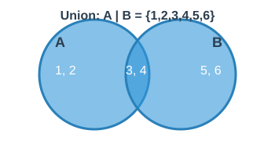
Think: "Everything in either A or B (or both)"
Intersection finds elements common to both sets.
a = {1, 2, 3, 4}
b = {3, 4, 5, 6}
# Intersection: elements in both sets
a & b # {3, 4}
a.intersection(b) # Same thing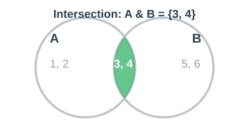
Think: "Only things in both A and B"
Difference finds elements in one set but not the other.
a = {1, 2, 3, 4}
b = {3, 4, 5, 6}
# Difference: elements in a but not in b
a - b # {1, 2}
a.difference(b) # Same thing
# Note: order matters!
b - a # {5, 6}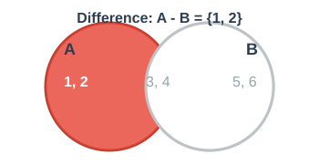
Think: "Things in A that aren’t in B"
Symmetric difference finds elements in either set, but not both.
a = {1, 2, 3, 4}
b = {3, 4, 5, 6}
# Symmetric difference: in either but not both
a ^ b # {1, 2, 5, 6}
a.symmetric_difference(b)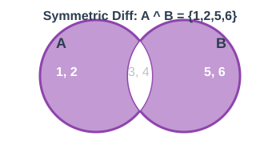
Think: "Things in A or B, but not in both"
# Start with one set
languages = {"Python", "Java"}
# Add elements
languages.add("JavaScript")
# {"Python", "Java", "JavaScript"}
# Add multiple elements (union in place)
languages.update(["Ruby", "Go"])
# {"Python", "Java", "JavaScript", "Ruby", "Go"}
# Remove elements
languages.remove("Java") # Raises KeyError if not found
languages.discard("Rust") # No error if not foundenrolled = {"Alice", "Bob", "Carol"}
submitted = {"Bob", "Carol", "Dave"}
# Who submitted but isn't enrolled?
submitted - enrolled # ___
# Who is enrolled and submitted?
enrolled & submitted # ___
# Who either enrolled or submitted (or both)?
enrolled | submitted # ___Turn to a neighbor and discuss for 60 seconds.
submitted - enrolled # {"Dave"}
enrolled & submitted # {"Bob", "Carol"}
enrolled | submitted # {"Alice", "Bob", "Carol", "Dave"}Given two sentences, use sets to find:
All unique words (combined)
Words that appear in both
Words unique to the first sentence
s1 = "the quick brown fox"
s2 = "the lazy brown dog"words1 = set(s1.split()) # {"the", "quick", "brown", "fox"}
words2 = set(s2.split()) # {"the", "lazy", "brown", "dog"}
all_words = words1 | words2 # Union
common = words1 & words2 # {"the", "brown"}
only_first = words1 - words2 # {"quick", "fox"}Sets are unordered collections of unique elements
No indexing (can’t use [])
Fast membership testing with in
Set operations: | (union), & (intersection), - (difference), ^ (symmetric difference)
Great for removing duplicates and comparing collections
Two fundamental ways to organize data:
| Stack | Queue |
|---|---|
Last In, First Out (LIFO) | First In, First Out (FIFO) |
Like a stack of plates | Like a line at a store |
Add/remove from top only | Add at back, remove from front |
# Using a list as a stack
stack = []
# Push: add to top
stack.append("first")
stack.append("second")
stack.append("third")
print(stack) # ["first", "second", "third"]
# Pop: remove from top
top = stack.pop() # "third"
print(stack) # ["first", "second"]append() pushes, pop() pops—both operate on the end.
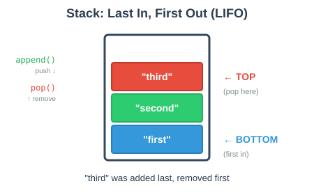
Undo functionality — Each action goes on the stack; undo pops the most recent
Browser history — Back button pops the most recent page
Function call stack — Python tracks function calls this way
Expression evaluation — Parsing mathematical expressions
# Simple undo system
actions = []
def do_action(action):
actions.append(action)
print(f"Did: {action}")
def undo():
if actions:
undone = actions.pop()
print(f"Undone: {undone}")from collections import deque
# Using deque as a queue (more efficient than list)
queue = deque()
# Enqueue: add to back
queue.append("first")
queue.append("second")
queue.append("third")
print(queue) # deque(['first', 'second', 'third'])
# Dequeue: remove from front
front = queue.popleft() # "first"
print(queue) # deque(['second', 'third'])append() adds to back, popleft() removes from front.
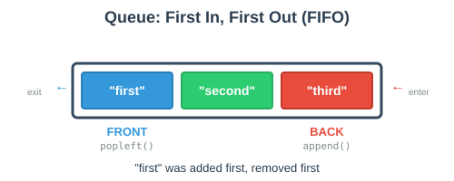
# Using a list as a queue (SLOW!)
queue = []
queue.append("a")
queue.pop(0) # O(n) - must shift all elements!
# Using deque as a queue (FAST!)
from collections import deque
queue = deque()
queue.append("a")
queue.popleft() # O(1) - no shifting needed!list.pop(0) is O(n) because all elements must shift.
deque.popleft() is O(1) because it’s designed for this.
Task scheduling — Process jobs in the order received
Print queue — Documents print in submission order
Message queues — Handle messages in arrival order
Breadth-first search — Graph traversal algorithm
from collections import deque
# Simple task processor
tasks = deque()
def add_task(task):
tasks.append(task)
print(f"Added: {task}")
def process_next():
if tasks:
task = tasks.popleft()
print(f"Processing: {task}")Which data structure would you use for each scenario?
Browser back button
Customer service hotline (hold music)
Redo functionality in a text editor
Processing incoming network requests
Turn to a neighbor and discuss for 60 seconds.
Browser back button → Stack (most recent page first)
Customer service → Queue (first caller served first)
Redo functionality → Stack (most recent undo first)
Network requests → Queue (process in order received)
| Stack (LIFO) | Queue (FIFO) |
|---|---|
|
|
|
|
Last in, first out | First in, first out |
Undo, back button, call stack | Task scheduling, print jobs |
A concise way to create lists from other sequences.
# Traditional approach
squares = []
for x in range(10):
squares.append(x ** 2)
# List comprehension (same result!)
squares = [x ** 2 for x in range(10)]Both produce: [0, 1, 4, 9, 16, 25, 36, 49, 64, 81]
One line instead of three!
[expression for item in iterable][x ** 2 for x in range(10)]
↑ ↑ ↑
| | └── Source of items
| └─────── Loop variable
└─────────────── What to put in the list# Only include even numbers
evens = [x for x in range(10) if x % 2 == 0]
# [0, 2, 4, 6, 8]
# Only include words that start with 'a'
words = ["apple", "banana", "apricot", "cherry"]
a_words = [w for w in words if w.startswith("a")]
# ["apple", "apricot"]Add if condition at the end to filter.
# Get lengths of words longer than 3 characters
words = ["hi", "hello", "hey", "howdy"]
lengths = [len(w) for w in words if len(w) > 3]
# [5, 5] (lengths of "hello" and "howdy")
# Uppercase only long names
names = ["Jo", "Alice", "Bob", "Elizabeth"]
upper_long = [n.upper() for n in names if len(n) > 3]
# ["ALICE", "ELIZABETH"]# Nested loops in comprehensions
pairs = [(x, y) for x in [1, 2, 3] for y in ['a', 'b']]
# [(1, 'a'), (1, 'b'), (2, 'a'), (2, 'b'), (3, 'a'), (3, 'b')]
# Equivalent to:
pairs = []
for x in [1, 2, 3]:
for y in ['a', 'b']:
pairs.append((x, y))Multiple for clauses create nested loops.
nums = [1, 2, 3, 4, 5]
[n * 2 for n in nums] # ___
[n for n in nums if n > 2] # ___
[n ** 2 for n in nums if n % 2 == 0] # ___
["even" if n % 2 == 0 else "odd" for n in nums] # ___Turn to a neighbor and discuss for 60 seconds.
[n * 2 for n in nums] # [2, 4, 6, 8, 10]
[n for n in nums if n > 2] # [3, 4, 5]
[n ** 2 for n in nums if n % 2 == 0] # [4, 16]
["even" if n % 2 == 0 else "odd" for n in nums] # ["odd", "even", "odd", "even", "odd"]Python also has dict comprehensions and set comprehensions:
# Dict comprehension
squares = {x: x**2 for x in range(5)}
# {0: 0, 1: 1, 2: 4, 3: 9, 4: 16}
# Set comprehension
unique_lengths = {len(w) for w in ["hi", "hello", "hey"]}
# {2, 5, 3}
# Generator expression (lazy evaluation)
gen = (x**2 for x in range(1000000)) # Doesn't compute yet!Concise syntax: [expression for item in iterable]
Add filtering: [expr for item in iterable if condition]
Can have multiple for clauses (nested loops)
Also: dict comprehensions {k: v for …} and set comprehensions {x for …}
Keep them readable—use regular loops for complex logic
Dictionaries store key-value pairs for fast lookup.
# Creating dictionaries
person = {"name": "Alice", "age": 25}
empty = {}
also_empty = dict()
# Accessing values
name = person["name"] # "Alice"
age = person.get("age") # 25
missing = person.get("job", "Unknown") # "Unknown"Keys must be hashable (immutable). Values can be anything.
Keys must be hashable (immutable types):
| Valid Keys | Invalid Keys |
|---|---|
Strings: | Lists: |
Numbers: | Dictionaries: |
Tuples: | Sets: |
Booleans: | Any mutable type |
valid = {(1, 2): "point", "name": "test", 42: "answer"}
invalid = {[1, 2]: "list"} # TypeError: unhashable type: 'list'# Values can be any type
data = {
"name": "Alice", # string
"scores": [85, 92, 78], # list
"address": { # nested dict
"city": "Boston",
"zip": "02101"
},
"active": True, # boolean
"process": lambda x: x*2 # even functions!
}One of the most common patterns: counting occurrences.
# Count word frequencies
text = "the cat sat on the mat"
word_counts = {}
for word in text.split():
if word in word_counts:
word_counts[word] += 1
else:
word_counts[word] = 1
print(word_counts)
# {'the': 2, 'cat': 1, 'sat': 1, 'on': 1, 'mat': 1}# Cleaner counting with .get()
text = "the cat sat on the mat"
word_counts = {}
for word in text.split():
word_counts[word] = word_counts.get(word, 0) + 1
print(word_counts)
# {'the': 2, 'cat': 1, 'sat': 1, 'on': 1, 'mat': 1}.get(key, default) returns the default if key doesn’t exist.
# Count letter grades in a file
def count_grades(filename):
"""Count occurrences of each grade in a file."""
grade_counts = {}
with open(filename, "r", encoding="utf-8") as f:
for line in f:
grade = line.strip()
if grade: # Skip empty lines
grade_counts[grade] = grade_counts.get(grade, 0) + 1
return grade_counts
# Usage
counts = count_grades("grades.txt")
print(counts)
# {'A': 15, 'B': 23, 'C': 12, 'D': 5, 'F': 2}Another common pattern: grouping/indexing data by a key.
# Index students by their grade
students = [
("Alice", "A"),
("Bob", "B"),
("Carol", "A"),
("Dave", "C"),
("Eve", "B")
]
by_grade = {}
for name, grade in students:
if grade not in by_grade:
by_grade[grade] = []
by_grade[grade].append(name)
print(by_grade)
# {'A': ['Alice', 'Carol'], 'B': ['Bob', 'Eve'], 'C': ['Dave']}def index_by_department(filename):
"""Index employees by department from a CSV file."""
employees_by_dept = {}
with open(filename, "r", encoding="utf-8") as f:
for line in f:
parts = line.strip().split(",")
if len(parts) >= 2:
name, department = parts[0], parts[1]
if department not in employees_by_dept:
employees_by_dept[department] = []
employees_by_dept[department].append(name)
return employees_by_dept
# Usage with file: "Alice,Engineering\nBob,Sales\nCarol,Engineering"
result = index_by_department("employees.csv")
# {'Engineering': ['Alice', 'Carol'], 'Sales': ['Bob']}Given this data, create: 1. A count of how many times each color appears 2. An index of items by their color
items = [
("apple", "red"),
("banana", "yellow"),
("cherry", "red"),
("lemon", "yellow"),
("grape", "purple")
]# Count colors
color_counts = {}
for item, color in items:
color_counts[color] = color_counts.get(color, 0) + 1
# {'red': 2, 'yellow': 2, 'purple': 1}
# Index by color
by_color = {}
for item, color in items:
if color not in by_color:
by_color[color] = []
by_color[color].append(item)
# {'red': ['apple', 'cherry'], 'yellow': ['banana', 'lemon'], 'purple': ['grape']}Keys must be hashable (immutable)
Values can be anything
Counting pattern: Use .get(key, 0) + 1
Indexing pattern: Check if key exists, initialize list if not
Both patterns are common in data processing
A hash map (also called a hash table) is the data structure underlying Python dictionaries and sets.
Key features:
Stores key-value pairs
Allows fast access, insertion, and deletion
Uses a hash function to determine where to store each item
Python’s dict is a hash map.
A hash function converts a key into an array index.
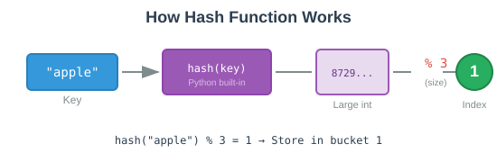
# Python's built-in hash function
hash("apple") # Some large integer
hash("banana") # Different integer
# To get an array index, use modulo
size = 3
index = hash("apple") % size # 0, 1, or 2The same key always produces the same hash.
A hash map is an array of buckets. Each bucket can hold key-value pairs.
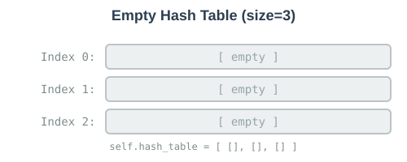
class HashTable:
def __init__(self, size):
self.size = size
self.hash_table = [[] for _ in range(size)]Let’s insert "apple": 10 into a hash table of size 3.
Step 1: Compute hash
hash("apple") = 8729374928374 (example)
Step 2: Get bucket index
8729374928374 % 3 = 1
Step 3: Store in bucket 1
Index 0: [ ]
Index 1: [("apple", 10)] ← stored here!
Index 2: [ ]def set_val(self, key, val):
hashed_key = hash(key) % self.size
bucket = self.hash_table[hashed_key]
bucket.append((key, val))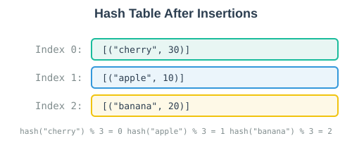
Each item lands in a different bucket based on its hash.
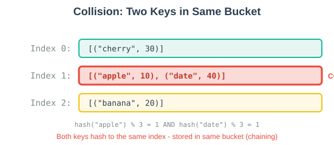
Collision: Two keys map to the same bucket.
Solution: Store multiple items in each bucket (chaining).
def set_val(self, key, val):
hashed_key = hash(key) % self.size
bucket = self.hash_table[hashed_key]
# Check if key already exists (update)
for index, (record_key, _) in enumerate(bucket):
if record_key == key:
bucket[index] = (key, val) # Update existing
return
# Key doesn't exist, add new
bucket.append((key, val))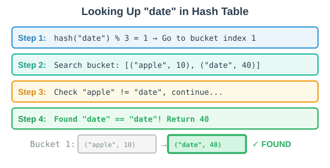
def get_val(self, key):
hashed_key = hash(key) % self.size
bucket = self.hash_table[hashed_key]
for record_key, record_val in bucket:
if record_key == key:
return record_val
return "No record found"Delete "apple":
Step 1: hash("apple") % 3 = 1
Step 2: Go to bucket 1: [("apple", 10), ("date", 40)]
Step 3: Find "apple", remove it
Step 4: Bucket now: [("date", 40)]def delete_val(self, key):
hashed_key = hash(key) % self.size
bucket = self.hash_table[hashed_key]
for index, (record_key, _) in enumerate(bucket):
if record_key == key:
bucket.pop(index)
returnclass HashTable:
def __init__(self, size):
self.size = size
self.hash_table = [[] for _ in range(size)]
def set_val(self, key, val):
hashed_key = hash(key) % self.size
bucket = self.hash_table[hashed_key]
for index, (record_key, _) in enumerate(bucket):
if record_key == key:
bucket[index] = (key, val)
return
bucket.append((key, val))
def get_val(self, key):
hashed_key = hash(key) % self.size
bucket = self.hash_table[hashed_key]
for record_key, record_val in bucket:
if record_key == key:
return record_val
return "No record found"
def delete_val(self, key):
hashed_key = hash(key) % self.size
bucket = self.hash_table[hashed_key]
for index, (record_key, _) in enumerate(bucket):
if record_key == key:
bucket.pop(index)
returnht = HashTable(3)
ht.set_val('apple', 10)
ht.set_val('banana', 20)
ht.set_val('cherry', 30)
print("Value for 'banana':", ht.get_val('banana')) # 20
print("Value for 'apple':", ht.get_val('apple')) # 10
ht.set_val('apple', 50) # Update existing key
print("Updated apple:", ht.get_val('apple')) # 50
ht.delete_val('banana')
print("After deletion:", ht.get_val('banana')) # No record found| Operation | Average | Worst Case |
|---|---|---|
Insert | O(1) | O(n) |
Lookup | O(1) | O(n) |
Delete | O(1) | O(n) |
Average case is constant time!
Worst case happens when all keys hash to the same bucket (everything in one list).
# This works
d = {(1, 2): "tuple key"}
# This fails!
d = {[1, 2]: "list key"} # TypeError: unhashable type: 'list'If a key could change, its hash would change, and we couldn’t find it!
# Imagine if this worked (it doesn't!)
key = [1, 2]
d = {key: "value"} # Stored at hash([1, 2]) % size
key.append(3) # Now key is [1, 2, 3]
# d[key] would look at hash([1, 2, 3]) % size — wrong bucket!Hash maps provide fast key-value storage (O(1) average)
Hash function converts keys to array indices
Collisions handled by chaining (lists in buckets)
Keys must be hashable (immutable) so their hash doesn’t change
Python’s dict and set are hash maps internally
Tuples | Immutable sequences; great for multiple returns, dict keys |
Sets | Unordered, unique elements; fast membership testing |
Set Operations | Union |
Stacks | LIFO with |
Queues | FIFO with |
List Comprehensions | Concise list creation |
Counting | Use |
Indexing | Check if key exists, initialize list if not |
Hash Maps | Fast O(1) lookup using hash functions |
Build a course analyzer that processes student enrollment data and produces:
Use sets to find:
All unique students across all courses
Students enrolled in BOTH "INST326" and "INST327"
Students in "INST326" who are NOT in "INST327"
Use a regular dictionary (no Counter/defaultdict) to:
Count how many courses each student is taking
Group students by the number of courses they’re taking
enrollments = {
"INST326": ["Alice", "Bob", "Carol", "Dave"],
"INST327": ["Bob", "Carol", "Eve", "Frank"],
"INST335": ["Alice", "Carol", "Eve"],
"INST346": ["Dave", "Frank", "Grace"]
}Use this enrollment data to complete the tasks on the previous slide.
Work with a partner. Test thoroughly!
enrollments = {
"INST326": ["Alice", "Bob", "Carol", "Dave"],
"INST327": ["Bob", "Carol", "Eve", "Frank"],
"INST335": ["Alice", "Carol", "Eve"],
"INST346": ["Dave", "Frank", "Grace"]
}
# Convert to sets for each course
inst326 = set(enrollments["INST326"])
inst327 = set(enrollments["INST327"])
# All unique students (union of all courses)
all_students = set()
for students in enrollments.values():
all_students = all_students | set(students)
# {'Alice', 'Bob', 'Carol', 'Dave', 'Eve', 'Frank', 'Grace'}
# Students in BOTH INST326 and INST327 (intersection)
in_both = inst326 & inst327
# {'Bob', 'Carol'}
# Students in INST326 but NOT in INST327 (difference)
only_326 = inst326 - inst327
# {'Alice', 'Dave'}# Count courses per student (using .get() pattern)
courses_per_student = {}
for course, students in enrollments.items():
for student in students:
courses_per_student[student] = courses_per_student.get(student, 0) + 1
# {'Alice': 2, 'Bob': 2, 'Carol': 3, 'Dave': 2, 'Eve': 2, 'Frank': 2, 'Grace': 1}
# Group students by number of courses (indexing pattern)
by_course_count = {}
for student, count in courses_per_student.items():
if count not in by_course_count:
by_course_count[count] = []
by_course_count[count].append(student)
# {2: ['Alice', 'Bob', 'Dave', 'Eve', 'Frank'], 3: ['Carol'], 1: ['Grace']}
# Find who's taking the most courses
max_courses = max(courses_per_student.values())
busiest = [s for s, c in courses_per_student.items() if c == max_courses]
print(f"Busiest student(s): {busiest} with {max_courses} courses")
# Busiest student(s): ['Carol'] with 3 courses🔗 Resources:
Python Tutor: https://pythontutor.com/python-compiler.html#mode=edit
Python Collections Module: https://docs.python.org/3/library/collections.html
Severance, Python for Everybody: Chapter 10: Tuples